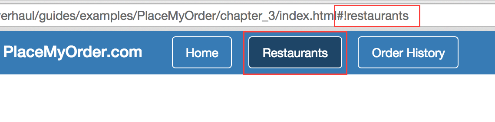
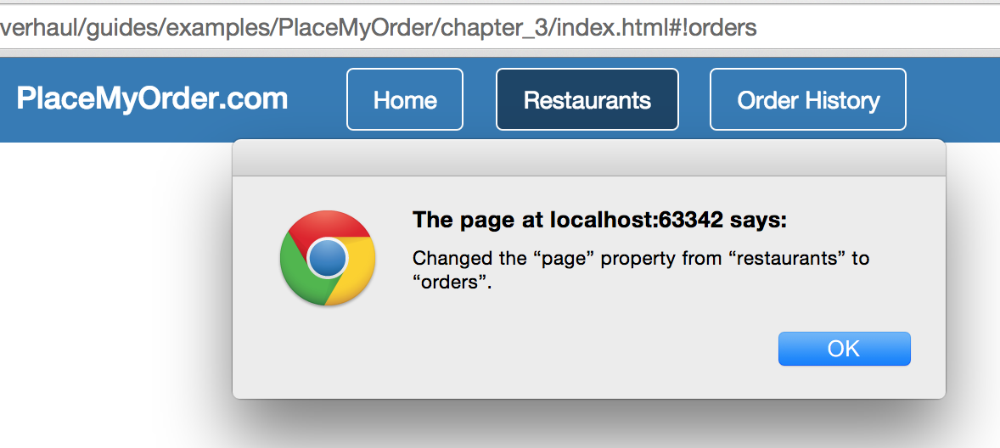
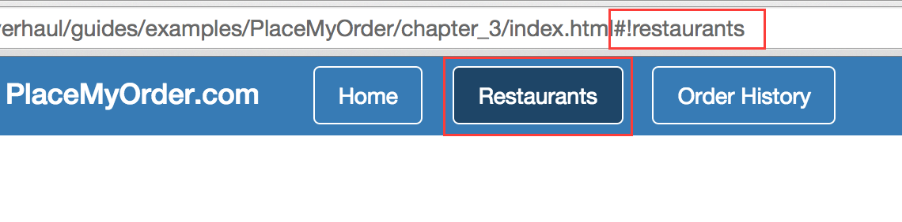
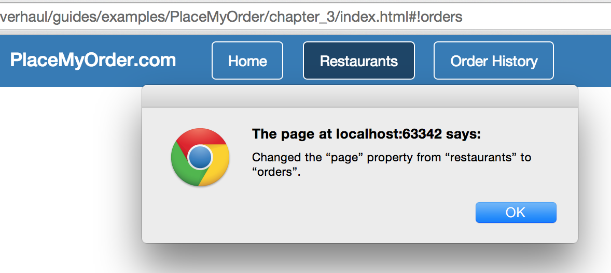

As mentioned in the introduction, CanJS suggests using a global
appState object to manage the state of your application. The appState object
is bound to two things:
The application’s base template
The application’s routing
Since you already know about creating instances of can.Map, creating an
appState object, which is a can.Map, will be easy. Let’s see how this works.
Open up your app.js file and update it as shown below.
$(function () {
var AppState = can.Map.extend({});
var appState = new AppState();
// Bind the application state to the root of the application
$('#can-main').html(can.view('main.stache', appState));
// Set up the routes
can.route(':page', { page: 'home' });
can.route(':page/:slug', { slug: null });
can.route(':page/:slug/:action', { slug: null, action: null });
$('body').on('click', 'a[href="javascript://"]', function(ev) {
ev.preventDefault();
});
// Bind the application state to the can.route
can.route.map(appState);
can.route.ready();
//appState.attr('page', 'restaurants');
appState.bind('change', function(ev, prop, change, newVal, oldVal) {
alert('Changed the “' + prop + '” property from “' + oldVal + '” to “' + newVal + '”.');
});
});
Routing
Before we dive into the details of the appState object, let’s quickly discuss
routing. Routing in CanJS allows us to manage browser history and client state by
synchronizing the window.location.hash with a can.Map. In other words, we can
use routing to reflect the state of our application or set the state of our application.
One of the things that makes routing powerful is that it records the state of the
application in the browser’s history. We’ll see some specific examples of this
as we proceed.
In our application, we setup routing by:
defining the possible routes by calling can.route,
binding our appState object to the route with a call to can.route.map, and
calling can.route.ready(), which sets up two-way binding between the
browser’s window.location.hash and the can.route’s internal can.Map.
On lines 10–12, we define all the potential routes in our application and the
properties on the appState object. Let’s look at each line individually.
can.route(':page', { page: 'home' });
This line does two things:
Creates a base route that is bound to one property: page.
Sets the default value of the page property to 'home'.
In our app, this will allow the following URLs:
#! (which will set page to 'home' because that’s the default)
#!orders/ (which will set page to 'orders')
#!restaurants/ (which will set page to 'restaurants')
can.route(':page/:slug', { slug: null });
This line does two things:
Binds a new slug property to our appState object.
Sets the default value of the slug property to null.
This makes the following URLs possible:
#!restaurants/spago/ (page will be 'restaurants' and slug will be 'spago')
Anything in the second part of the URL will be the slug property on our
appState object.
Binds a new action property to our appState object.
Sets the default value of the action property to null.
This makes the following URLs possible:
#!restaurants/spago/order/ for order confirmation; again, action will be 'order'
Let’s take a moment to see how these routes are bound to our appState object.
Notice the //appState.attr('page', 'restaurants'); line at the end of our
app.js file; let’s uncomment that line so it looks like
appState.attr('page', 'restaurants');
Now, refresh the app in your browser. The path will now be #!restaurants,
and you’ll notice that the Restaurants link in the navigation is highlighted.

Note that, after we initialized our routes, updating the value of our
appState’s page property caused the route to update as well.
The value of the page property was serialized and appended
to the window.location.hash.
Let’s see what happens if we adjust the value of the hash. To monitor this
change, we’ve included the following lines:
appState.bind('change', function(ev, prop, change, newVal, oldVal) {
alert('Changed the “' + prop + '” property from “' + oldVal + '” to “' + newVal + '”.');
});
These lines use can.Map.bind to
watch for changes to the appState object. Go ahead and change the URL from
#!restaurants to #!orders. You should see an alert with this message:

It was mentioned earlier that we bound our AppState to the application’s main.stache.
This is the key to connecting the AppState to our components.
Because the appState object is bound to our main template, which includes the rest of
the components in the app, these attributes will automatically be included in the scope of
the components.
Before moving on, let’s remove the following lines from our application:
appState.attr('page', 'restaurants');
appState.bind('change', function(ev, prop, change, newVal, oldVal) {
alert('Changed the “' + prop + '” property from “' + oldVal + '” to “' + newVal + '”.');
});
In this Chapter
Get the code for: chapter: app state and routing
As mentioned in the introduction, CanJS suggests using a global
appStateobject to manage the state of your application. TheappStateobject is bound to two things:Since you already know about creating instances of
can.Map, creating anappStateobject, which is acan.Map, will be easy. Let’s see how this works. Open up yourapp.jsfile and update it as shown below.Routing
Before we dive into the details of the
appStateobject, let’s quickly discuss routing. Routing in CanJS allows us to manage browser history and client state by synchronizing thewindow.location.hashwith acan.Map. In other words, we can use routing to reflect the state of our application or set the state of our application. One of the things that makes routing powerful is that it records the state of the application in the browser’s history. We’ll see some specific examples of this as we proceed.In our application, we setup routing by:
can.route,appStateobject to the route with a call tocan.route.map, andcan.route.ready(), which sets up two-way binding between the browser’swindow.location.hashand thecan.route’s internalcan.Map.On lines 10–12, we define all the potential routes in our application and the properties on the
appStateobject. Let’s look at each line individually.This line does two things:
page.pageproperty to'home'.In our app, this will allow the following URLs:
#!(which will setpageto'home'because that’s the default)#!orders/(which will setpageto'orders')#!restaurants/(which will setpageto'restaurants')This line does two things:
slugproperty to ourappStateobject.slugproperty tonull.This makes the following URLs possible:
#!restaurants/spago/(pagewill be'restaurants'andslugwill be'spago')Anything in the second part of the URL will be the
slugproperty on ourappStateobject.This line does two things:
actionproperty to ourappStateobject.actionproperty tonull.This makes the following URLs possible:
#!restaurants/spago/order/for order confirmation; again,actionwill be'order'Let’s take a moment to see how these routes are bound to our
appStateobject. Notice the//appState.attr('page', 'restaurants');line at the end of ourapp.jsfile; let’s uncomment that line so it looks likeappState.attr('page', 'restaurants');Now, refresh the app in your browser. The path will now be
#!restaurants, and you’ll notice that the Restaurants link in the navigation is highlighted.
Note that, after we initialized our routes, updating the value of our
appState’spageproperty caused the route to update as well. The value of thepageproperty was serialized and appended to thewindow.location.hash.Let’s see what happens if we adjust the value of the hash. To monitor this change, we’ve included the following lines:
These lines use
can.Map.bindto watch for changes to theappStateobject. Go ahead and change the URL from#!restaurantsto#!orders. You should see an alert with this message:
It was mentioned earlier that we bound our AppState to the application’s
main.stache. This is the key to connecting the AppState to our components. Because theappStateobject is bound to our main template, which includes the rest of the components in the app, these attributes will automatically be included in the scope of the components.Before moving on, let’s remove the following lines from our application:
‹ Stache Templates Components ›